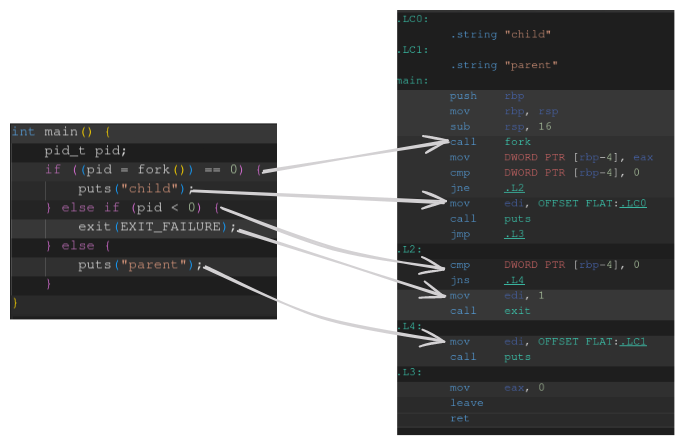

Build a Shell in C
Introduction
A shell is something most developers use every single day, so I thought why not learn to create one. Even if it ends up missing some of the nice to have features I would like to be able to execute commands, pipe outputs to each other, and time command execution.
When searching online I came across the excellent shell tutorial from Stephen Brennan, which guides the user through crafting a simple shell in C. By the end of the walkthrough the shell can execute commands, change directory, display a help page, and exit. All of which make for a very good introduction to a shell, but as Stephen says in his tutorial, readers should take his shell and expand upon it, which is exactly what we will be doing here.
This shell pulls ideas from Stephen, mostly in the handling of builtin functions, on top of which we will be adding many features. You will probably be surprised how usable we can make a shell with a fairly small amount of code.
Includes
I don’t like when articles leave the includes block for the very end, so I am going to place all the necessary imports here at the beginning for those of you like me.
#include <linux/limits.h> // Size constants specific to your machine #include <pwd.h> // Present working directory #include <stdbool.h> // True/False in C #include <stdio.h> // Printing #include <stdlib.h> // A lot #include <string.h> // C-style string functions #include <sys/types.h> // Process type definitions #include <sys/wait.h> // Wait for child processes to exit #include <time.h> // Time functions #include <unistd.h> // POSIX system APIs
Header File
#ifndef SHELL_H_ #define SHELL_H_ int sh_cd(char ***args); int sh_help(char ***args); int sh_exit(char ***args); int sh_time(char ***args); int sh_num_builtins(); int sh_run(char***, int); char *read_line(); char **split_pipes(char*); char ***split_args(char**, int*); void execute_command(char**, int, int); int execute_pipeline(char***, int); #endif // SHELL_H_
Main Loop
Our shell won’t stray far from the norm in this area, grabbing an entire line of text, parsing it, and executing it.
int main() { int status = 0; while (true) { // Prompt char *cwd = getcwd(NULL, 0); printf("%s => ", cwd); char *line = read_line(); char **commands = split_pipes(test); char ***args = split_args(commands, &status); if (status == -1) { fprintf(stderr, "shell: Expected end of quoted string\n"); } else if (sh_run(args, status) == 0) { exit(1); } for (int i = 0; args[i]; i++) { free(args[i]); } free(args); free(commands); free(line); free(cwd); } }
The prompt simply displays the current working directory, and a symbol to let the user know they can type. After that we grab their input, parse it, execute it, and free up any memory that we allocated in the loop, before doing it all over again.
The hardest part about main is the memory management. If you’re not used to C I think the easiest way to think about this is that every call to malloc (or any similar alloc function) needs to be matched with a free call. This will become easier to see once we are actually allocating memory, but for now just know that the original line that we read in is the only C-style string that we allocate. The commands and args arrays just hold pointers into this original string, so it would cause a double free error if we tried to free pieces of the string, and then the entire string at the end.
Another thing to note is that there are some C functions that will allocate memory for you, I like using these functions, but I know others prefer to do all their own allocations. Either way, it is important to free the memory associated with these functions, which we do in the last significant line of main.
Parsing input
read_line()
The first step to input parsing is getting the input to parse. We do this using a simple wrapper around the getline() function in C. This is another function that can allocate memory for you, but feel free to allocate your own buffer if you’d like.
char *read_line() { char *line = NULL; size_t bufsize = 0; if (getline(&line, &bufsize, stdin) == -1) { if (feof(stdin)) { exit(EXIT_SUCCESS); // EOF ctrl-D } else { perror("readline"); exit(EXIT_FAILURE); } } return line; }
As we can see, not much code here, but we do need to handle some possible error cases. The first condition is checking for a return value of -1, meaning getline() wasn’t able to get a line. This means that either the user has stopped input (EOF), or there was an actual failure from the function. We exit in both cases, but use perror() to let the user know which error actually occurred. perror() stands for “print error”, and it will use the last function call, along with a global error code to figure out what error occurred, and print out its associated message.
split_pipes()
The next step in our program is to split the input string into different commands. Let’s say for example you wanted to take the output of apt list and pipe that into grep "sql", in order for this to work we need to treat each command as its own block in our pipeline.
When I first started learning C I found string handling to be the thing that got in my way most. I could handle allocating and freeing memory (on a small scale), and building my own data structures, but string handling was something I mostly stayed away from. It wasn’t that string handling in C was particularly hard, it was just a different way to think about strings, and it got in the way of me coding.
This project is almost entirely string handling, so I decided I would finally need to learn how all the functions worked, and I must say I was very surprised at how easy string handling in C is. Don’t get me wrong, they’re not like strings in high level languages with an attached length, and a dynamically allocated backing buffer of memory, but strings in C are easy to work with. Let’s take a look at the first example of that.
char **split_pipes(char *line) { char **commands = calloc(16, sizeof(char*)); if (!commands) { perror("calloc failed") exit(1); } char *command; int pos = 0; command = strtok(line, "|"); while (command) { commands[pos++] = command; command = strtok(NULL, "|"); } // Trim whitespace for (int i = 0; i < pos; i++) { while (*commands[i] == ' ' || *commands[i] == '\n') { commands[i]++; } char *end_of_str = strrchr(commands[i], '\0'); --end_of_str; while (*last_spc == ' ' || *last_spc == '\n') { *last_spc = '\0'; --last_spc; } } return commands; }
See, not too bad to split a string on pipes and trim any whitespace. Honestly strtok() and strrchr() felt a bit like magic until I read up on their implementation and then things became a lot clearer. The important thing to know is that C-style strings use a null terminator (’\0’) to indicate the end of a string, so breaking a string apart is as simple as replacing all the delimiter characters with ’\0’ and returning a pointer to the beginning of each “token”, which is exactly how strtok() works.
You may also notice that we call strtok() in 2 different ways, once with a string and once with NULL. This is because strtok is smart enough to know that when given NULL as it’s first argument the caller wants it to continue on parsing the string from its last position. The other string function we are using here is strrchr() which simply returns a pointer to the last occurrence of a character in a string, which can also include the null terminator as shown above.
The other thing that may look different here is that we are using calloc() instead of the normal malloc(). calloc() stands for clear allocator, which zeros out the memory after being allocated. I find this to be a nice to have when working with strings or pointers, because a NULL or 0 version of either is treated as the end of their associated “container”. Strings end on a null terminator, and arrays of pointers either have a length, or continue until they reach a null pointer. Another nice thing about calloc is that the size and amount being allocated are passed as separate arguments to the function. In the example above we are allocating 16 char * sized elements.
As a side note, a real shell would either handle memory allocation dynamically, or statically allocate a very large buffer to handle user input. Here we are hard coding a limit of 16 commands being piped into each other, which is just fine for a small shell like ours.
split_args()
We now need to split each command into an array of arguments. For example the command echo "hello world" has only 2 arguments, echo and hello world. If we were to simply split arguments by spaces we would end up with 3 arguments, echo, "hello and world". The code to handle this isn’t too bad, we just need to keep track of our current state, if we are in a string or not.
char ***split_args(char **commands, int *status) { int outer_pos = 0; char ***command_args = calloc(16, sizeof(char**)); if (!command_args) { perror("calloc failed"); exit(1); } for (int i = 0; commands[i]; i++) { int pos = 0; char **args = calloc(16, sizeof(char*)); if (!args) { perror("calloc failed"); exit(1); } bool inside_string = false; char *current_token = &commands[i][0]; for (int j = 0; commands[i][j]; j++) { if (commands[i][j] == '"' && !inside_string) { // Beginning of a string commands[i][j++] = '\0'; if (commands[i][j] != '"') { inside_string = true; current_token = &commands[i][j]; } else { commands[i][j] = '\0'; current_token = &commands[i][++j]; } } else if (inside_string) { if (commands[i][j] == '"') { // Ending of a string inside_string = false; commands[i][j] = '\0'; args[pos++] = current_token; current_token = NULL; } else { // Character in string continue; } } else if (commands[i][j] == ' ') { // Space delimeter if (current_token && *current_token != ' ') { args[pos++] = current_token; } current_token = &commands[i][j+1]; // Go past the space commands[i][j] = '\0'; } else if (commands[i][j] == '$' && commands[i][j+1] && commands[i][j+1] != ' ') { // Environment variable args[pos++] = getenv(&commands[i][++j]); while (commands[i][j]) { ++j; } current_token = &commands[i][j+1]; } else { // Regular character continue; } } // Check if string literal was finished if (inside_string) { *status = -1; return command_args; } else if (current_token && *current_token != ' ') { // Add last argument to the array args[pos++] = current_token; } // Add this commands arguments array to the outer array command_args[outer_pos++] = args; } *status = outer_pos; return command_args; }
Quite a bit of complexity is introduced when handling quoted arguments, along with the ability to evaluate variables (also known as environment variables) like $HOME or $PATH. Let go through the bits of code one at a time. Make sure to keep track of each time we call calloc(), so we can pair this up with a call to free() back in main.
The first section sets up our array (char***), which separates first by command, then by argument. Then we need to fill this array up with pointers to each argument. Remember in C that a string is really just a null terminated char*, so char*** looks a little more scary than it actually is. If pointers are still confusing here, I will try and help by showing each level.
| C-style Type | How we Access | Other Languages |
|---|---|---|
char*** |
command_args |
[][]string |
char** |
commands_args[i] |
[]string |
char* |
command_args[i][j] |
string |
char |
command_args[i][j][k] |
char |
Now we need to go through each pipe separated command and parse its arguments into a char** array, which we can eventually point to from our outer char*** array. There are 3 cases that we are going to handle here (an actual shell would have a more complicated parser to handle a broader range of inputs), quoted arguments (string literals), environment variables ($HOME), and space delimited values.
For quoted arguments we are either inside a string, or outside of one, so we can keep track of this state and use it to make decisions about what to do when we encounter a " character. First we enter a string, and update our state. Then we set the starting quote to a null character, this is because a shell does not include the quote mark in the argument, just what is inside it. We then set our current_token to the first character of the string, or skip past it entirely if the string is empty. This continues on until we find the end of the string, however if we never find the end of the string we will end up throwing an error.
The next case to handle is any space-separated arguments, which are much easier than a string. If we encounter a space and our current_token is not whitespace we add it to our array of arguments, set the space to a null character, and set current_token one character after the space.
Lastly we need to handle the evaluation of environment variables. A normal shell will interpret a single $ character as itself, but a $ with any characters directly after it will be evaluated as an environment variable. To do this we first check if the is anything past the ’$’, then if it is not a space. After that we can call getenv() which returns a pointer to the string value associated with the key.
We can do something pretty cool here because of how we have set up our argument arrays. Instead of trying to replace '$HOME' in the original string we can simply use the pointer returned from calling getenv. This allows us to avoid splicing a new string into the middle of the line, which would be slower, and more prone to errors. Our initial call to getline is the only time we allocate memory directly for a string, the rest of our allocations are just to point into this string, so replacing memory in the middle of the string would be wasteful when we can just point somewhere else. The last important thing to note is that we must only free the line once, and not try to free each individual part of the string we have split up. We only free the pointers into the string, the string can be freed at the very end in one call.
Now that we have gone over our parsing code, the last thing to address is the error handling. You will notice that our function takes a pointer to an integer called status, which has 2 purposes. If the status returned is negative we know that the input contained an unfinished string literal, which we will treat as an error in our basic shell. The other purpose is to indicate how many commands we encountered, which will be necessary for our next stage.
Running Commands
sh_run()
Once we have our input fully parsed we can move on to executing the commands. sh_run() serves as our entry point for execution. First checking for empty input, then checking all shell builtins, and lastly executing any command that doesn’t match the first 2 conditions.
int sh_run(char ***commands, int num_commands) { if (commands[0][0]) == NULL) { // No command given return 1; } // Check shell builtins for (int i = 0; i < sh_num_builtins(); i++) { if (strcmp(commands[0][0], builtin_strs[i]) == 0) { return (*builtin_func[i])(commands);) } } return execute_pipeline(commands, num_commands); }
As with any normal shell a blank input should just move the cursor to the next line and wait for more input.
We will cover shell builtins later, but just know for now that commands like cd, time, and others are not their own programs, instead they are small functions that out shell can call to either change the current environment, or to measure the execution of other programs.
Finally, if we don’t match either of the other cases we move on to executing the command.
Shell Builtins
Some of the functionality of the shell you may be used to like cd or time needs to manipulate the shell directly, instead of running another program and displaying it’s output. If cd were to be a program it would be able to change its current directory, but this state change would not be reflected in our shell when it returns. For this reason some commands are built directly into the shell.
int sh_cd(char ***args); int sh_help(char ***args); int sh_exit(char ***args); int sh_time(char ***args); char *builtin_strs[] = {"cd", "help", "exit", "time"}; int (*builtin_func[])(char ***) = {&sh_cd, &sh_help, &sh_exit, &sh_time}; int sh_num_builtins() { return sizeof(builtin_strs) / sizeof(char *); }
We can start out by defining the glue code of our builtins. We give a function prototype, map strings to their position, and create an array of function pointers, along with the number of builtins. Of this section function pointers are probably the most confusing, so let’s dig into those a bit more.
The type of the array we are defining is an array of function pointers, with each function accepting a single char *** argument, and returning an integer. The right-hand side of the declaration contains the memory address of each of these functions. Now we have an array containing 4 function pointers, each of which can be used by dereferencing the appropriate position in the array, and then calling the function using the normal syntax, which we saw in the sh_run() function above.
sh_cd()
cd is one of those commands that is doing a lot for you under the hood. At the end of the day the function is just executing chdir(), which takes in a path, and if possible moves you to that directory. What you might not know is that this can only take in fully expanded paths, meaning that any symlinks or tilda symbols must be resolved before running the function. What does this mean for us in a shell? Well, our shell will need to be at least a little smart, knowing that if the use just types cd, we should find their home directory and take them to it, or if they type a path like ~/Downloads, we need to first find home, and then go to Downloads.
int sh_cd(char ***args) { uid_t uid = getuid(); struct passwd *pw = getpwuid(uid); if (!pw) { perror("Retreive Home Dir"); return 0; } if (args[0][1] == NULL) { if (chdir(pw->pw_dir) != 0) { perror("sh: cd"); } } else { char path[PATH_MAX]; char expanded_path[PATH_MAX]; char *tilda = strchr(args[0][1], '~'); if (tilda) { strcpy(path, pw->pw_dir); strcat(path, tild+1); } else { strcpy(path, args[0][1]); } char *exp_path = realpath(path, expanded_path); if (!exp_path) { perror("realpath"); return 0; } if (chdir(exp_path) != 0) { perror("sh: cd"); } } return 1; }
Quite a few things going here, but like we said before, it all comes down to running chdir(). The first thing we do is grab the current users home directory, it is possible we won’t end up needing this, but that is an optimization you can try in a refactor. Then we check the arguments passed to cd, if there aren’t any we try to move to the users home directory, and return based on the result.
If they did give cd an argument our job is a little harder, we have to expand the path they did give us, taking care to replace any tilda characters with the users home directory. We create 2 static buffers, one to hold our scratch work, and another to hold the full path. Then we form the full path by placing our strings into the scratch buffer, finally calling realpath on the result. Then just like before we call chdir().
realpath is a function that is able to give you a fully qualified path after resolving symlinks and any relative paths, which makes things more consistent for our shell. Here is an excellent video on the subject, along with a wealth of other knowledge on C and systems programming, Jacob Sorber realpath.
sh_help()
Hopefully every shell has a help command, and ours will be no different. Feel free to expand upon this with any information you see fit.
int sh_help(char ***args) { printf("Shell Help Page\n\n"); printf("Available commands: \n"); for (int i = 0; i < sh_num_builtins(); i++) { printf("- %s\n", builtin_strs[i]); } return 1; }
sh_exit()
I believe every shell has the ability to exit, or at least to log out of the system by leaving the shell. Our shell will keep this nice and simple.
int sh_exit(char ***args) { return 0; }
Now would probably be a good time to explain why our functions are returning integers. Our shell will continue to run as long as we get a non-zero return from calling sh_run(), we can use this to represent 3 possible states: negative numbers indicating and error, zero indicating an exit condition, and positive numbers telling the program to continue. With our simple shell we only use 1 possible error, but it would be easy to expand this to cover other possible errors you may encounter.
sh_time()
Our last builtin is one of my favorite commands to use in the shell. time allows the user to quickly and easily get the runtime of an arbitrary string of commands.
int sh_time(char ***args) { // Advance past "time" args[0]++; // Count Commands int i = 0; while (args[i++]){;} // Get time struct timespec start, end; double elapsed_time; clock_gettime(CLOCK_MONOTONIC, &start); int res = sh_run(args, i); clock_gettime(CLOCK_MONOTONIC, &end); elapsed_time = (end.tv_sec - start.tv_sec) * 1000.0 + (end.tv_nsec - start.tv_nsec) / 1e6; printf("Time: %.3f milliseconds\n", elapsed_time); // Return pointer to "time" for free() args[0]--; return res; }
In order for time to work with the other shell builtins we have to run our own mini shell pipeline within the time function. After counting the number of commands without time we set up a stopwatch and time the execution of our pipeline. Then we can print out the time it took, and return the result code to our main loop.
We have to mess around with pointers a little bit here, which is not ideal, but in order to make sure we don’t leak memory it is necessary. We just ignore the first token (time) when calling sh_run() again, and then restore the pointer to its original position before we return.
With all the parsing and builtins covered we can finally move to the real systems programming part of this project.
Command Execution
execute_pipeline()
A simple shell can call execvp directly on its argument, but we would like to be able to support piping between commands. Of course that complicates things quite a bit, but nothing we can’t solve. At an operating system level we can open up a pipe which is a one way channel of communication between 2 endpoints (which in our case will be each command). If we are running 3 commands we will need 2 pipes to facilitate the intermediate communication between them. We do not need a third pipe because the very beginning and end of the command chain will use standard in and standard out respectively.
After we set up the pipes between endpoints we attach each command to its associated input/output and execute the command. It then writes its result and exits. The only special case we have to handle here is the final command, which takes care of either a single command, or the final in the pipeline.
int execute_pipeline(char ***commands, int num_commands) { // No command given if (commands[0][0][0] == '\0') { return 1; } // Create pipes int **pipes = malloc((num_commands - 1) * sizeof(int *)); for (int i = 0; i < num_commands - 1; i++) { pipes[i] = malloc(2 * sizeof(int)); // pipes[i][0] = in, pipes[i][1] = out if (pipe(pipes[i]) == -1) { perror("pipe"); return 0; } } // Execute commands in the pipeline for (int i = 0; i < num_commands - 1; i++) { int input_fd = (i == 0) ? STDIN_FILENO : pipes[i-1][0]; int output_fd = pipes[i][1]; execute_command(commands[i], input_fd, output_fd); close(output_fd); // We are done writing to this pipe } // Execute last (or only) command int input_fd = (num_commands > 1) ? pipes[num_commands-2][0] : STDIN_FILENO; int output_fd = STDOUT_FILENO; execute_command(commands[num_commands-1], input_fd, output_fd); // Close/Cleanup pipes for (int i = 0; i < num_commands - 1; i++) { close(pipes[i][0]); close(pipes[i][1]); free(pipes[i]); } free(pipes); return 1; }
Just like before, we do a bounds check to ensure that there is a command to be executed. Then we set up the pipes to facilitate communication between the different commands. When we set up the pipes we have to call pipe on each index in the array, this assigns a file descriptor (int) to each index, which we will eventually use to read and write data.
We then loop through the commands choosing either stdin, or the previous pipe as our input, and stdout or the next pipe as our output. An important thing here is that we close the write end of the pipe (our output) as soon as we are done with it. If we don’t do this the next command in the pipeline will hand, as it is waiting for more input. Closing the pipe tells that next command that we won’t be sending any more information.
The last step is to clean up the allocated memory, note that we allocate one outer array, and fill it with individual calls to malloc in a loop, so our free calls should first happen in a loop, then free the outer pointer.
execute_command()
We only have one more function to write, and it is arguably the most important to how a shell works. In order to execute an entirely separate program from within our shell we have to somehow tell the operating system to start a new process that can run the program for us. We can accomplish this by “forking” ourselves into a new process, then executing the command from the new process.
Fork is a system call on Linux which creates a child process with a different process ID (PID), and execution space, but the child is an exact copy of the parent, meaning it has the same code. The code below shows a very simple example of calling fork. Inside the child process calling fork returns 0, this tells us that we are executing in the child process. At the same time the parent process continues to execute, the result of calling fork in the parent process is the PID of the child. We can use these 2 return values to execute different code depending on the context. We will take advantage of this in our shell by executing commands in the child, then waiting for the child to finish before returning to the shell.

void execute_command(char **args, int input_fd, int output_fd) { // Create child pid_t pid; pid_t wpid; int status; if ((pid = fork()) == 0) { // Child Process context // Redirect in and out file descriptors if needed if (input_fd != STDIN_FILENO) { dup2(input_fd, STDIN_FILENO); close(input_fd); } if (output_fd != STDOUT_FILENO) { dup2(output_fd, STDOUT_FILENO); close(output_fd); } // Execute command if (execvp(args[0], args) == -1) { perror("execvp"); exit(EXIT_FAILURE); } } else if (pid < 0) { // Fork failed perror("fork"); exit(EXIT_FAILURE); } else { // Parent process do { wpid = waitpid(pid, &status, WUNTRACED); } while (!WIFEXITED(status) && !WIFESIGNALED(status)); } }
After forking, we can set up out input and output streams. We first check if the streams need to be duplicated, and if they do, we call dup2 which duplicates the given file descriptor to our processes standard in/out. After that we can close the passed file descriptor because it is not redundant. Our last step here is to execute the command using execvp.
The reason we have to call execvp from a child process is that it will replace our current process in memory, and never return (unless we encounter an error). So we execute the command in the child process because we are ok with its memory being replaced. We than wait for it to exit from the parent.
There is a whole family of exec functions, but the one we are using here has a few features important to our shell. The ’p’ in execvp tells us that this command will first look at the users $PATH variable when determining which command to execute. The other important feature is that we can pass an array of C-style strings to be executed, which perfectly matches with how we parsed the input.
In the parent process we want to ensure we do not return to the shell before the command has finished executing. The parent waits using waitpid(), which takes the PID to monitor, a place to store its status, and we also pass WUNTRACED to get results of any processes that are stopped. This loop continues until the process exits or is terminated with a signal.
Conclusion
That’s it! The whole shell comes together in around 325 lines of code. Honestly not too bad for the amount of functionality we were able to include in our little program. Of course there are plenty of improvements to be made, but this entire article was written with a live reloading server running in our shell, along with managing the git repo my site lives inside.
After walking through the original lsh tutorial I found that my biggest pain point was the fact that spaces were the only delimiters allowed for the shell. Now after adding quoted argument support and piping my biggest pain point is shell autocomplete. However, this would require a rewrite of the main event loop and input code, so we might save that for another day.
Overall I found that C is not difficult at all to work with, manually allocating and deallocating memory really makes you think about if the allocation is really necessary, and it helps me to understand my programs flow. I think once you get the hang of pointers the only possible hurdle in this project is wrapping your head around Linux system calls, which is a vital skill to have when it comes to understanding systems programming.